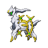

A wild adventure awaits!
Three familiar faces. One important decision.
Choose a region. Build a team from its Pokédex. Conquer its bosses and legendary finale.

Search the entire National Dex, including regional and special forms. Then choose three starting upgrades. HP, defenses and impact damage gain an extra 5% every round from round 1. Movement speed increases linearly by 2% of its starting speed per round.
Exchange one party member AND one upgrade for premium choices. Each category has its own one-time reroll. Items are only removed when you pick their replacement.
Every repeated passive upgrade also adds ×1.10 party damage, including normal/master copies. Each partner can Mega Evolve once in Hoenn, Kalos or Alola (or True Endless). After round 100, matching Mega and Gigantamax damage upgrades can appear when such partners are present. In Galar, Max Mushrooms appear from round 25 for partners with Gigantamax forms. Gigantamax is permanent, grants ×2 personal damage and a G-Max move, keeps the same stage, and prevents all future evolution. Each partner can use it once. Eternatus is ineligible. Tera crystals cannot target partners already using that Tera type. Range cards have been removed.
Damage cards multiply with themselves and other matching cards; every repeat also grants ×1.10 party damage. All current Pokémon types count. Stage buffs apply to the current stage.
Example: two +35% stage cards = 1.35 × 1.35 = 1.8225×. Add a +35% matching type card: 2.4604× damage.
Choose a starter, then start a wave. Your party automatically fires at enemies moving toward the tower. All attacks deal neutral damage to every enemy type. There are no type weaknesses, resistances or immunities. Collected type upgrades still strengthen matching partners. Fully evolved partners unlock signature attacks with beams, splash damage, chain lightning, and more.
Early waves use fewer, weaker enemies to ease you in. Early waves arrive in small batches. From round 51 onward, each level arrives in five balanced groups of about 20%. Each next group waits until only one enemy remains; single-Pokémon groups must be defeated before the next arrives. Small boss teams use fewer groups. HP, defense, speed, and impact damage derive from their base stats. Stage 2 enemies join at wave 4; stage 3 at wave 9.
Survive a wave to choose one of three rewards: recruit, evolve, improve the tower, or strengthen a type or evolution stage. Build a party of up to six. Damage carries between waves; the Repair & Reinforce card restores health.
After round 50, every reward set includes an advanced tactic: split targeting, faster attacks, slowing hits, defense penetration, finishing damage, or healing on defeats. Copies stack. Split Volley divides damage by target capacity even when fewer enemies are available. Signature attacks keep their area effects. Premium trades can grant two stacks of an advanced tactic. Non-finale boss HP, defenses, movement speed and impact damage are doubled on top of the existing 20% boost. Finale encounters retain their existing boost.
After round 80, Rallying Power and Master Rally have four times the selection weight. Each roll contains distinct upgrades; normal and master versions cannot occupy two slots in the same roll. Round 80 unlocks ricochets, Lock-On Link, Critical Cadence, Marked Wounds, Victory Nova, Guardian Shell, and Last Stand Relay. Each upgrade card has a 10% chance to be a master upgrade. Master Execute stuns surviving targets below 35% HP, including bosses; Finishing Instinct still applies. Stuns stop movement and attacks, with 2 seconds of recovery between stuns.
Speed button: 1× / 2× / 5×. Space: pause · 1 / 2 / 3: choose a card · Enter: start wave. Leaving the tab pauses combat. Your best wave is saved on this device separately for Classic and Endless. Full screen shows the simulation and choices at the bottom. Endless retains the story schedule, then adds a random boss every ten rounds and an extra 5% multiplier to HP, defenses and impact damage per round after 151. During that scaling phase, movement speed instead rises linearly by 2% of its round-151 speed per round.
Auto immediately starts each next wave with no wait timer. Unclaimed reward sets and premium trades stack in your reward bank. Choose cards during combat to apply them immediately; opening a premium trade does not pause Auto. Later or Escape banks the trade again. Auto never picks for you. After every 10 cleared rounds, range, effective defense, and max HP grow by 5%. Every 25 rounds, a premium trade is banked with one Pokémon exchange and one upgrade exchange, plus one reroll per category.
TRUE ENDLESS uses the entire National Dex from round 1 in the Hall of Origin. Choose any starter, then pick from three starting upgrade rolls. Advanced tactics unlock at round 25, elite and master upgrades at round 50. Random Legendary, Mythical or Ultra Beast bosses appear every 10 rounds. Enemy HP, defenses and impact damage gain an extra ×1.05 per round from the beginning. Movement speed instead increases linearly by 2% of its round-1 baseline per round. Mega Stones, Max Mushrooms and Tera Shards are all available; Mega and Gigantamax forms grant +100% personal damage and their own signature animation. A roll always includes at least one card that is not a Tera Shard. Canceling a transformation returns to the same reward choices.